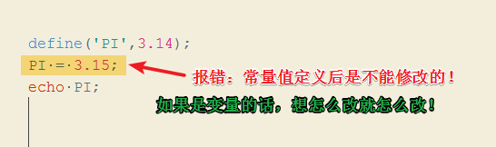
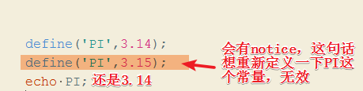
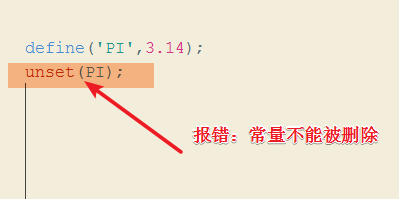
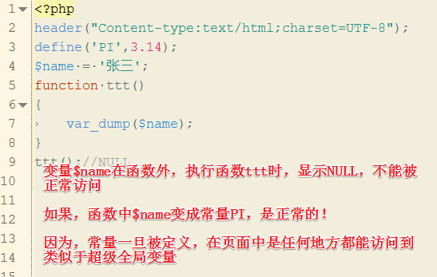
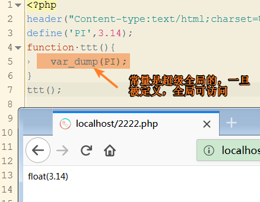
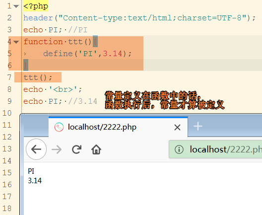
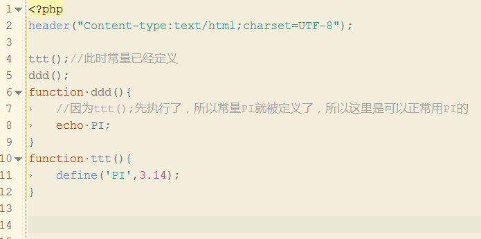
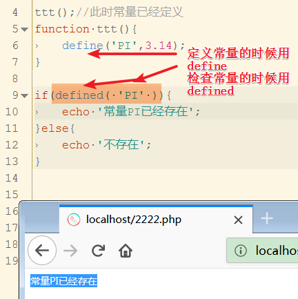
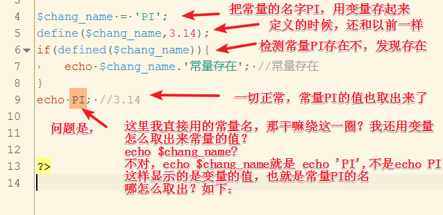
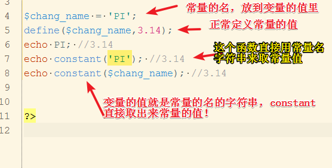

1.常量是什么？有什么存在的必要？
答：举个例子，公司开发，数据库的地址用户名密码等信息一般固定不变，不需要后面程序改动。
如果用变量，$db = 'xx';其他人写程序，后面好巧不巧，修改了这个变量，是不是就出问题了。
再比如，程序中要用到圆周率等，用变量存，就怕哪天被修改了，程序上是不会报错的，但是不符合开发目的，最好用常量存这些关键数据，为什么？
这些数据的特点：固定的值，不能让后面的程序代码修改他们的值了。
2.那怎么定义常量？
1 /*
2 常量命名的要求和变量一样，但是约定俗成的规则（最好这样用）：全大写
3 下面是定义一个名为PI的常量
4 */
5 define('PI',3.14);
6 //怎么使用常量呢？要不要加$? 答：不用，加$有问题！
7 echo PI; //3.143.常量会定义了，它有什么特征呢？我们使用的时候要注意什么？
3.1 常量一旦被定义后，不能修改它的值，不能再定义它，不能删除它！



3.2常量的作用域是超级全局的！




4.怎么知道常量存不存在？
比如;在某处程序，我想知道有没有定义过PI？

5.常量的名字（如PI），存在变量里成吗？怎么用？

constant函数上场，constant(常量名的字符串)就可以取出常量值
